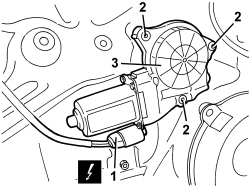
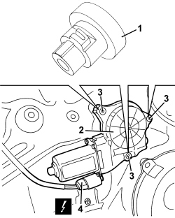

7010M20 REAR DOOR ELECTRIC WINDOW, LEFT OR RIGHT - R.R. WITH DOOR PANEL/SUPPORT FRAME REMOVED
- Path
- Procedures > 70 FITTINGS > 7010 PASSENGER COMPARTMENT REAR SIDE DOORS > 7010M REAR SIDE DOOR ELECTRIC WINDOWS > 7010M20 REAR DOOR ELECTRIC WINDOW, LEFT OR RIGHT - R.R. WITH DOOR PANEL/SUPPORT FRAME REMOVED
- Kind
- repair procedure (removal / refitting; the operation number is the code)
- Applies to
- all engines; all production periods
- Interactive page
- https://sloeber94.github.io/elrnDB/alfa/159/en/#/939011196
Applies to: all engines; all production periods
 Removing
Removing
 Refitting
Refitting1. Disconnect the electrical connection.
Description | Component |
|---|---|
LEFT REAR DOOR LOCK GEARED MOTOR | |
RIGHT REAR DOOR LOCK GEARED MOTOR |
2. Undo the bolts.
3. Remove the electric window motor releasing the splined shaft.

Applies to: all engines; all production periods
Refitting
Removing- Check that the electric window motor is not damaged.
1. Replace the bushes.
2. Position the window motor.
3. Tighten the fixing bolts.
4. Connect the electrical connection.

Topics linked from this page (2)
Topics that link to this page (5)
- 7010M21 REAR SIDE DOOR ELECTRICALLY-OPERATED WINDOW, LEFT OR RIGHT - R.R.
- 7010M26 ELECTRIC WINDOW OPENING MECHANISM FOR ONE REAR DOOR LH OR RH - R.R
- 7010M27 ELECTRIC WINDOW MECHANISM FOR ONE REAR DOOR LH OR RH - R.R. WITH SUPPORT FRAME REMOVED
- E3051 ELECTRIC REAR WINDOWS - WIRING DIAGRAM
- E3051 REAR ELECTRIC WINDOWS - COMPONENT LOCATION